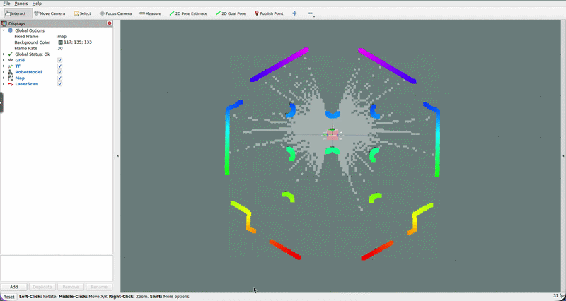

Mapping¶
What Is SLAM?¶
Before your robot can navigate autonomously, it needs a map of its environment. But here's the chicken-and-egg problem: to build a map, the robot needs to know where it is, and to know where it is, the robot needs a map.
SLAM (Simultaneous Localization and Mapping) solves both problems at once. As the robot moves through an unknown environment, SLAM continuously builds a map while simultaneously figuring out the robot's position within that map.
How SLAM Toolbox Works¶
linorobot2 uses SLAM Toolbox, the standard SLAM implementation for ROS2.
SLAM Toolbox works by matching incoming laser scans against the map it has built so far. Every time a new scan arrives, it asks: "where does this scan fit best in the existing map?" The answer is both a map update (new obstacles observed) and a position estimate (the robot's pose that best explains the scan).
Over time, as the robot revisits areas it has seen before, SLAM Toolbox performs loop closure: it recognizes that the current scan matches an area mapped earlier, and corrects any accumulated drift. This is what keeps large maps from warping or splitting.
Configuration¶
SLAM Toolbox is configured in linorobot2_navigation/config/slam.yaml. The defaults work well for most indoor environments and you shouldn't need to change anything to get started.
Key parameters to understand:
| Parameter | Default | Description |
|---|---|---|
map_frame |
map |
The coordinate frame for the map |
odom_frame |
odom |
The coordinate frame for odometry |
base_frame |
base_footprint |
The robot's base frame |
scan_topic |
/scan |
The laser scan topic to subscribe to |
resolution |
0.05 |
Map resolution in meters per cell (5 cm) |
map_update_interval |
5.0 |
How often (seconds) to update the map |
do_loop_closing |
true |
Enable loop closure detection |
transform_timeout |
0.2 |
TF lookup timeout in seconds |
For advanced tuning (adjusting loop closure thresholds, scan matching parameters, etc.), refer to the Nav2 SLAM Toolbox documentation.
If you get the warning slam_toolbox: Message Filter dropping message: frame 'laser', increase transform_timeout by 0.1 until it disappears.
Creating a Map¶
Make sure the robot is fully booted and all topics (laser scan, odometry) are publishing before starting SLAM.
Terminal 1: Boot the robot (Physical Robot):
Or for Simulated Robot:
Terminal 2: Start SLAM Toolbox:
For the Simulated Robot:
Terminal 3: Visualize (from host machine, ideally when working with Physical Robot):
In RViz you should see the laser scan (colored dots) and the map building up as the robot moves.
Terminal 4: Drive the robot:
Drive the robot slowly and methodically through the entire area you want to map. Cover all rooms, hallways, and corners. Move at a moderate pace. Going too fast gives SLAM Toolbox less time to match scans and can cause drift.

Tip: Once the basic map outline is established, you can use RViz's 2D Goal Pose tool to have the robot navigate autonomously while mapping. This is particularly useful for large spaces. See the Nav2 SLAM tutorial for details.
Saving the Map¶
Once you're satisfied with the map, save it before shutting anything down. The map must be saved while SLAM Toolbox is still running.
cd linorobot2/linorobot2_navigation/maps
ros2 run nav2_map_server map_saver_cli -f <map_name> --ros-args -p save_map_timeout:=10000.
Replace <map_name> with a descriptive name (e.g., office, lab, home). This creates two files:
<map_name>.yaml: metadata (resolution, origin, and the image file location)<map_name>.pgm: the map image (white = free, black = obstacle, grey = unknown)
Keep both files in the same directory. The YAML references the PGM by path.
What's Next¶
With a map in hand, the robot has everything it needs for autonomous navigation. The next step is to load the map and start Nav2, which will use the map for path planning and AMCL for localization. See Navigation.